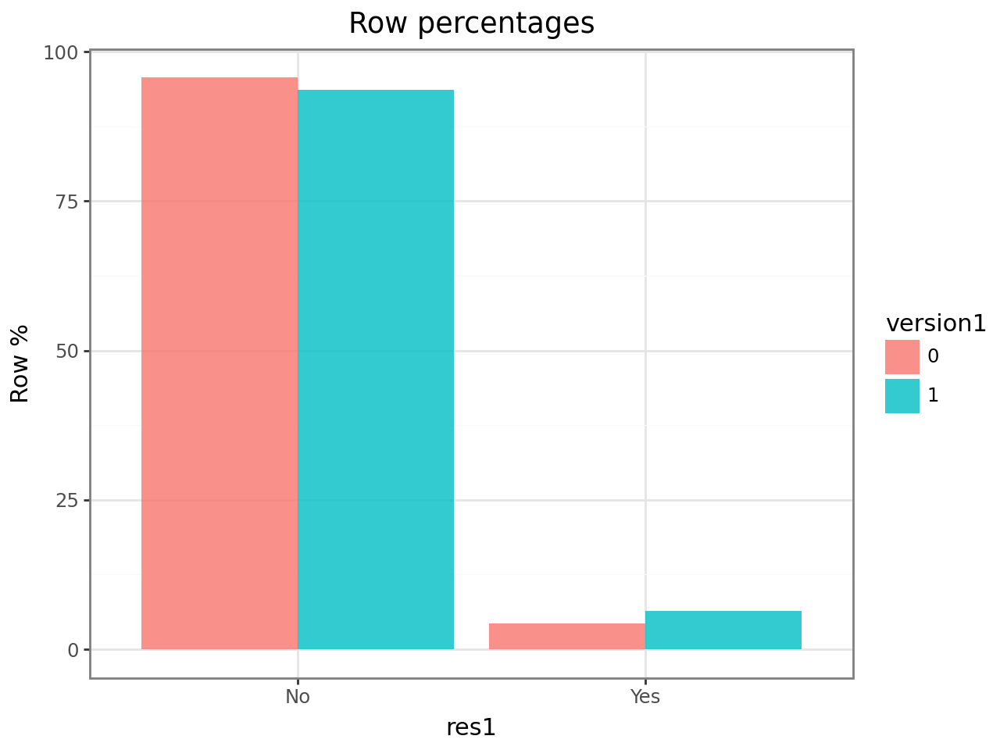
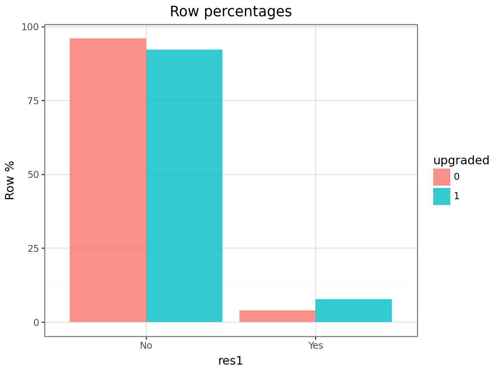
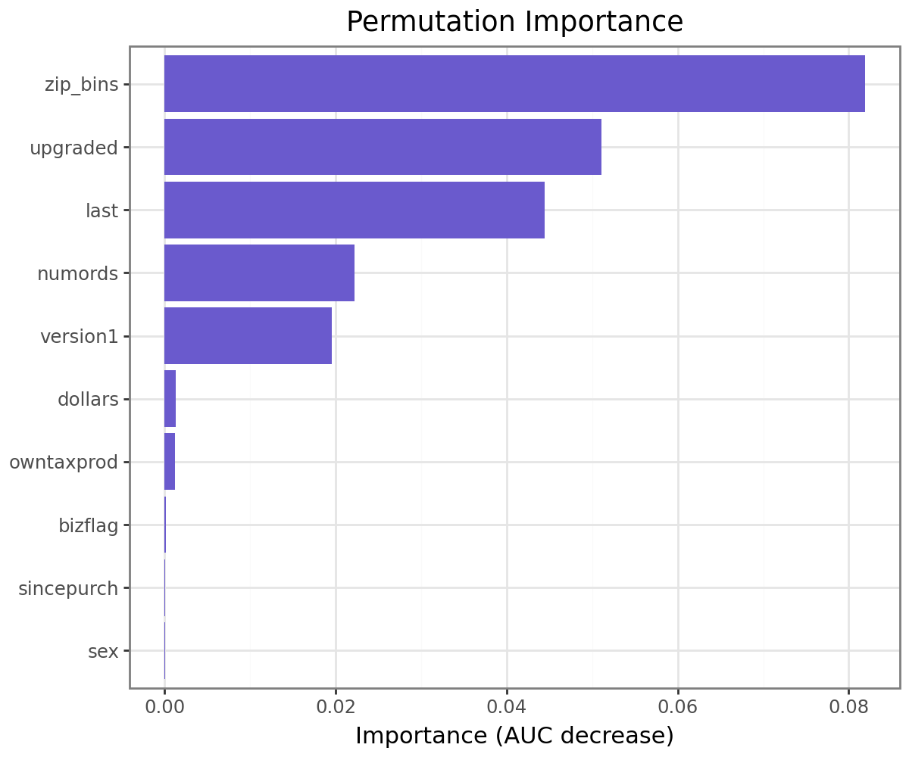
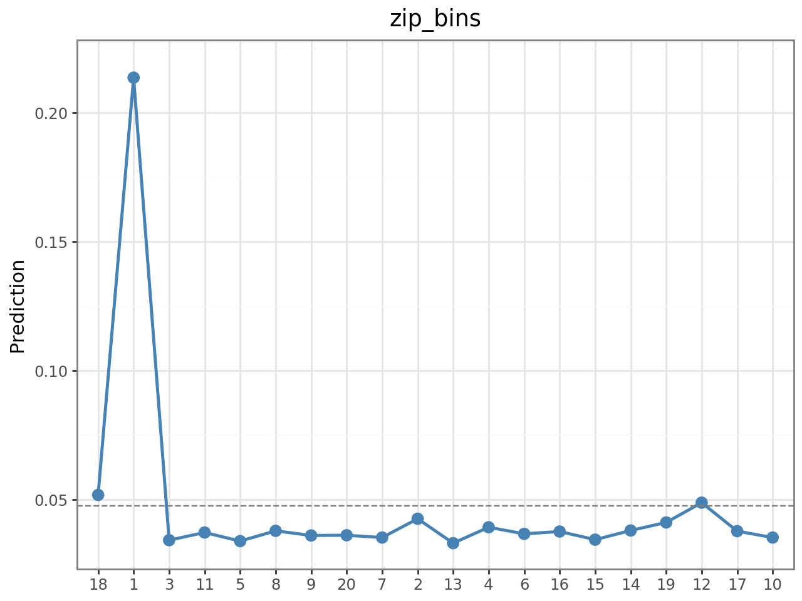

Intuit QuickBooks – Upgrade Targeting Strategy
Intuit mailed 75,000 existing customers upgrade offers for QuickBooks. With a mailing cost of $1.41 and a margin of $60 per response, the break-even response rate is just 2.35% — meaning most customers are unprofitable to contact. The goal of this project is to build a targeting model that maximizes expected profit by identifying the right customers to mail in Wave 2.
Data
The dataset contains 75,000 customer records with purchase history, demographic, and geographic features.
intuit75k = pl.read_parquet("data/intuit75k.parquet")
intuit75k.head()shape: (5, 15)
┌─────┬───────┬──────────┬─────────┬───┬──────────┬──────┬──────────┬──────────┐
│ id ┆ zip5 ┆ zip_bins ┆ sex ┆ … ┆ upgraded ┆ res1 ┆ training ┆ res1_yes │
╞═════╪═══════╪══════════╪═════════╪═══╪══════════╪══════╪══════════╪══════════╡
│ 1 ┆ 94553 ┆ 18 ┆ Male ┆ … ┆ 0 ┆ No ┆ 1 ┆ 0 │
│ 2 ┆ 53190 ┆ 10 ┆ Unknown ┆ … ┆ 0 ┆ No ┆ 0 ┆ 0 │
│ 3 ┆ 37091 ┆ 8 ┆ Female ┆ … ┆ 1 ┆ Yes ┆ 1 ┆ 1 │
└─────┴───────┴──────────┴─────────┴───┴──────────┴──────┴──────────┴──────────┘Key variables: zip_bins (ZIP-level income/density cluster), version1 (owns v1), upgraded (previously upgraded), numords (order count), last (months since last order), res1 (Wave-1 response — our target).
The business constraints define the model objective:
MAIL_COST = 1.41
MARGIN_PER_RESPONSE = 60.0
DROP_FACTOR = 0.5 # Wave-2 response rate drops ~50% vs Wave-1
breakeven = MAIL_COST / MARGIN_PER_RESPONSE # = 0.0235Only mail customers where predicted response probability × 0.5 > 2.35%.
Exploratory Data Analysis
Before modeling, we examined which features are most associated with responding (res1 = "Yes").
Version 1 ownership is a strong signal — customers on v1 have a noticeably higher response rate, since they have the most to gain from upgrading:
ct = rsm.basics.cross_tabs({"intuit75k": train_df}, "version1", "res1")
ct.summary(output="perc_row")
ct.plot(plots="perc_row")
Prior upgrade history is even more discriminating — customers who have upgraded before respond at nearly twice the base rate. This suggests upgrade behavior is sticky:
ct = rsm.basics.cross_tabs({"intuit75k": train_df}, "upgraded", "res1")
ct.plot(plots="perc_row")
Both variables will be key features, and their interaction with each other (and with recency) motivated our feature engineering step.
Feature Engineering & Model
We fit a logistic regression with interaction terms to capture non-linear relationships:
# Interactions: upgrade behavior interacts with recency and order frequency
train_df = train_df.with_columns([
(pl.col("numords") * pl.col("version1")).alias("numords_version1"),
(pl.col("last") * pl.col("version1")).alias("last_version1"),
])
clf = rsm.model.logistic(
data={"intuit75k": train_df},
rvar="res1", lev="Yes",
evar=[
"zip_bins", "numords", "dollars", "last",
"version1", "owntaxprod", "upgraded",
"zip801", "zip804",
"numords_version1", "last_version1"
]
)
clf.summary()Logistic regression (GLM)
Response variable : res1
Level : Yes
Explanatory variables: zip_bins, numords, dollars, last, version1,
owntaxprod, upgraded, zip801, zip804,
numords_version1, last_version1
┌──────────────────┬────────┬─────────┬─────────────┬───────────┬─────────┬─────────┬─────┐
│ index ┆ OR ┆ OR% ┆ coefficient ┆ std.error ┆ z.value ┆ p.value ┆ │
╞══════════════════╪════════╪═════════╪═════════════╪═══════════╪═════════╪═════════╪═════╡
│ zip_bins ┆ ... ┆ ... ┆ ... ┆ ... ┆ ... ┆ < .001 ┆ *** │
│ upgraded ┆ 1.821 ┆ +82.1% ┆ 0.600 ┆ 0.071 ┆ 8.44 ┆ < .001 ┆ *** │
│ version1 ┆ 1.543 ┆ +54.3% ┆ 0.434 ┆ 0.065 ┆ 6.68 ┆ < .001 ┆ *** │
│ last ┆ 0.982 ┆ -1.8% ┆ -0.018 ┆ 0.003 ┆ -5.91 ┆ < .001 ┆ *** │
└──────────────────┴────────┴─────────┴─────────────┴───────────┴─────────┴─────────┴─────┘upgraded has an odds ratio of 1.82 — a customer who previously upgraded is 82% more likely to respond. version1 adds another 54% lift. These are the two strongest individual predictors.
Feature Importance & Model Interpretation
Permutation importance shows which features drive AUC the most when removed:
clf_base.plot("pip") # permutation importance plot
zip_bins is the dominant predictor by a wide margin, followed by upgraded and last (recency). This tells a clear story: where a customer lives and whether they’ve upgraded before are far more informative than demographics like gender or business flag.
The partial dependence plot for zip_bins reveals a striking non-linearity:
clf_base.plot("pdp", incl=["zip_bins"])
ZIP bin 1 has a predicted response rate of ~21% — nearly 5× the average. This cluster likely corresponds to high-density urban business areas where QuickBooks upgrades have the highest ROI. All other bins cluster around 3–5%. This single feature justifies the geographic feature engineering approach.
Model Comparison
We benchmarked four models — Logistic Regression, MLP, XGBoost, and Random Forest — on validation expected profit, not just AUC. Profit is what matters for the business decision.
for name, model in models.items():
p = model.predict(val_sub).get_column("prediction")
profit = perf.profit(
rvar=val_sub["res1"], pred=p, lev="Yes",
cost=MAIL_COST, margin=MARGIN, scale=DROP_FACTOR
)
auc = roc_auc_score(y_true, p.to_numpy())===== VALIDATION MODEL COMPARISON =====
Logit | Profit: $8,252.90 | AUC: 0.7785 ← selected
MLP | Profit: $8,155.91 | AUC: 0.7726
XGB | Profit: $8,149.20 | AUC: 0.7747
RF | Profit: $6,592.11 | AUC: 0.7097| Model | Validation Profit | AUC |
|---|---|---|
| Logistic Regression | $8,252.90 | 0.7785 |
| MLP (tuned) | $8,155.91 | 0.7726 |
| XGBoost (tuned) | $8,149.20 | 0.7747 |
| Random Forest (tuned) | $6,592.11 | 0.7097 |
Logistic Regression wins on both profit and AUC. This is not coincidental — on a dataset with ~12% response rate and moderate size (~75K rows), ML models tend to overfit noise. The well-engineered logistic model with domain-driven interaction terms outperforms black-box approaches.
Final Test Evaluation
After selecting Logistic Regression on the validation set, we evaluated on the held-out test set:
print("===== FINAL TEST EVALUATION (LOGIT) =====")
# Predict on test set, apply 50% Wave-2 drop factor
p_test = clf_clean.predict(test_df).get_column("prediction")
p_wave2 = p_test * DROP_FACTOR
mailed = (p_wave2 > breakeven)===== FINAL TEST EVALUATION (LOGIT) =====
Test AUC: 0.7675
Test expected profit: $19,161
Mailing size: 5,954 / 22,500 (26.46%)
Actual response rate mailed: 11.99%
Scaled profit (full Wave-2): $191,611
--- ROME Comparison ---
Teacher's ROME (baseline 6% response): 155.11%
Our ROME (profit-optimized targeting): 228.24%- Targeted only 26% of customers — eliminating unprofitable contacts
- Actual response rate among mailed customers: 12% (vs. 6% baseline assumption)
- ROME of 228% vs. teacher’s baseline of 155%
- Scaled to full Wave-2 base: $191,611 expected profit
The 228% ROME means that for every dollar spent on mailing, the model returns $2.28 in margin — well above the no-model baseline.
Key Takeaways
- Geography dominates: ZIP-level clusters capture neighborhood-level purchasing culture and are the single most predictive feature
- Prior behavior is sticky: customers who upgraded before are 82% more likely to respond again
- Profit ≠ accuracy: model selection on profit threshold outperforms AUC-based selection for constrained budget problems
- Simpler models generalize better when signal-to-noise is low — a well-tuned logistic regression beat XGBoost and MLP on both validation profit and test AUC
Jan–Feb 2026 · Group 23 · Python, Polars, Scikit-learn, XGBoost